تجديد الشهادة¶
يمكّنك هذا الدليل من استبدال شهادة ولوج منتهية الصلاحية، في 7 خطوات.
متصفح إلزامي
يجب إنجاز التجديد بواسطة Firefox 52 ESR: لا يسمح Basilisk بتثبيت الشهادة.
الخطوة 1 — التعرف على شهادة منتهية الصلاحية¶

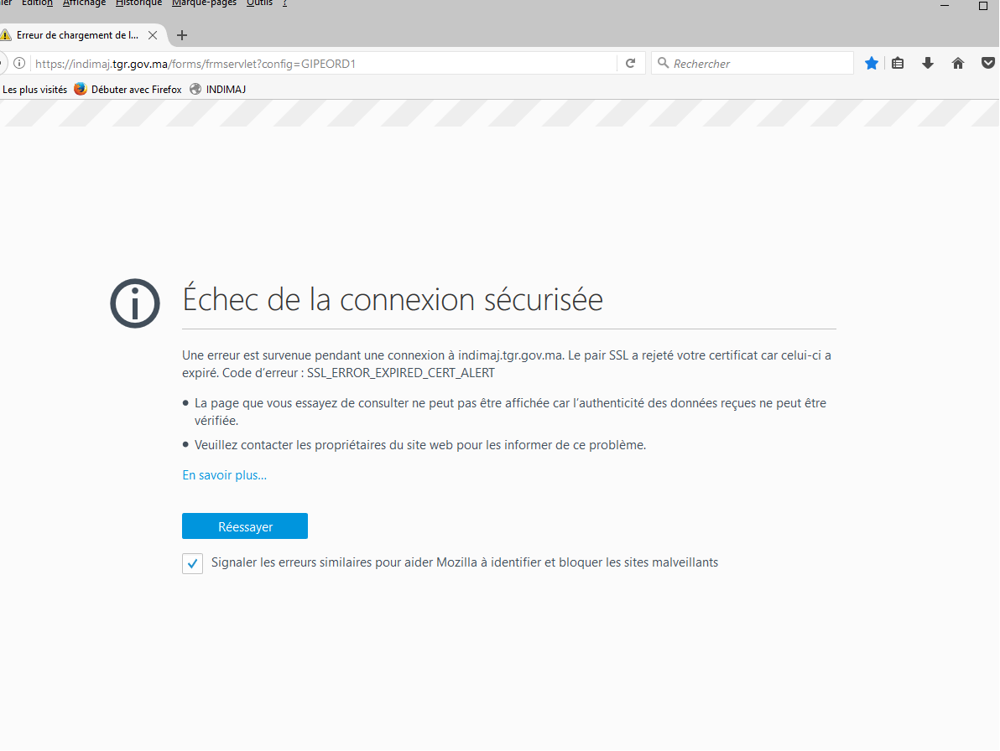
الرسالة التي يعرضها Firefox
عند الدخول إلى INDIM@J (أو إلى INDIM@J Partenaire)، يعرض Firefox رسالة « Échec de la connexion sécurisée » مع النص « Le pair SSL a rejeté votre certificat car celui-ci a expiré » ورمز الخطأ SSL_ERROR_EXPIRED_CERT_ALERT.
ماذا تفعل؟
انتهت صلاحية شهادة الولوج الخاصة بك. الضغط على «Réessayer» لا يحل المشكل: جدّد الشهادة باتباع الخطوات أسفله.
الخطوة 2 — الدخول إلى بوابة الشهادة¶

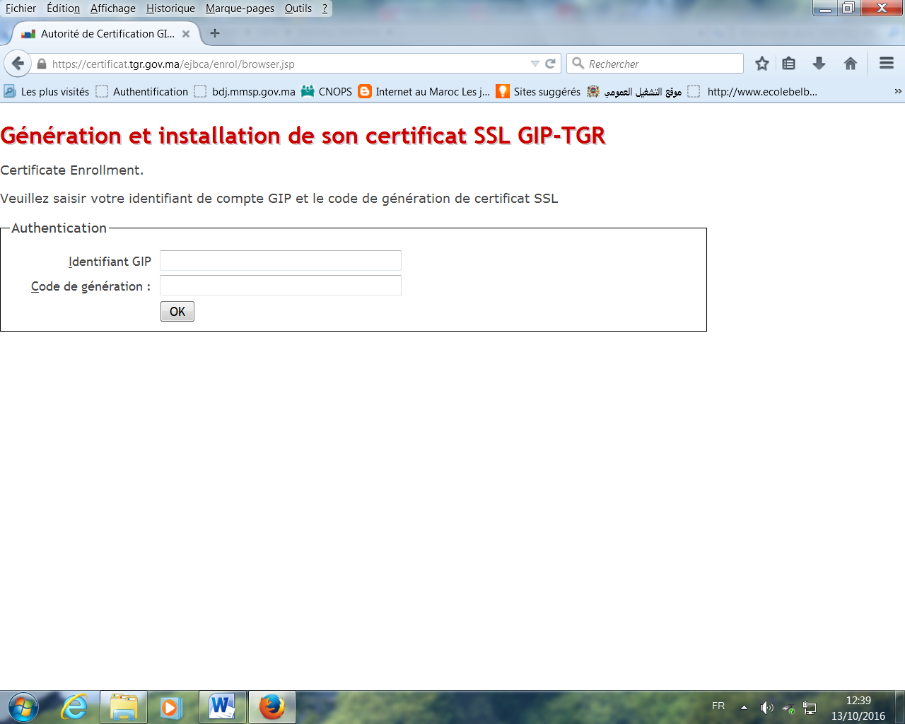
- في Firefox، ادخل إلى العنوان https://certificat.tgr.gov.ma.
- أدخل Identifiant GIP (المعرّف) و Code de génération (رمز الإنشاء).
- اضغط على OK.
معلومة مفيدة
عادةً ما يكون المعرّف GIP ورمز الإنشاء مطابقين لاسم المستخدم في INDIM@J.
الخطوة 3 — إنشاء الشهادة الجديدة¶

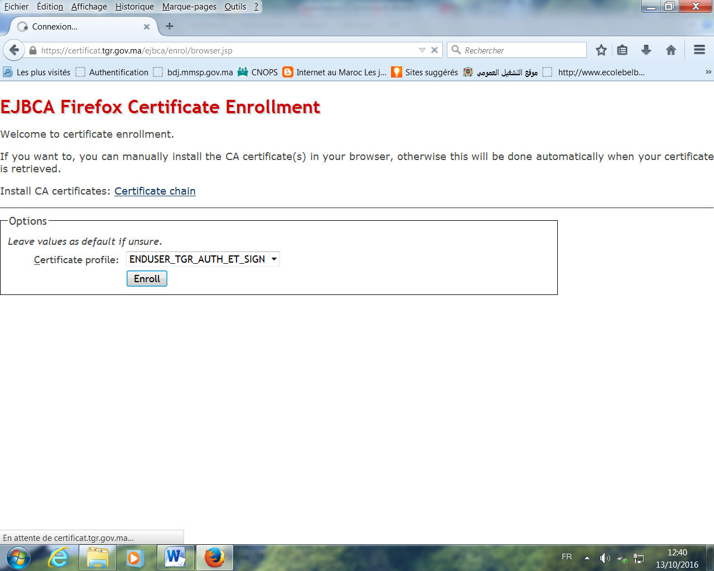
- اترك الملف التعريفي المقترح افتراضياً: ENDUSER_TGR_AUTH_ET_SIGN.
- اضغط على Enroll.
- تؤكد صفحة Certificate Created إنشاء الشهادة.
- تظهر رسالة تفيد بأن الشهادة الشخصية قد ثُبّتت: اضغط على OK.

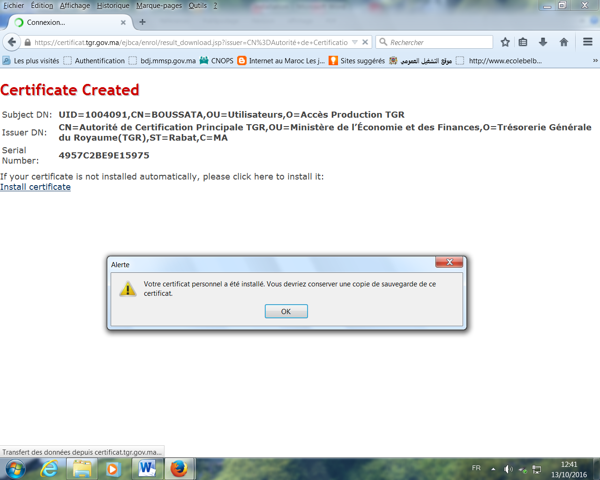
الخطوة 4 — فتح مدير الشهادات في Firefox¶

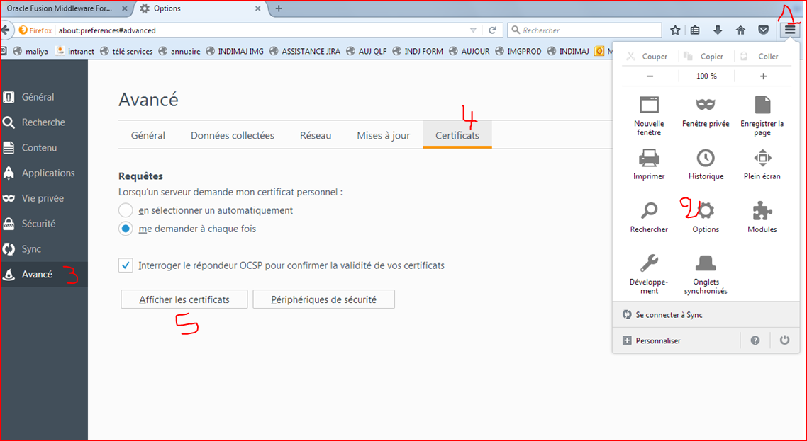
- افتح القائمة ☰ أعلى نافذة Firefox.
- اضغط على Options.
- اضغط على Avancé…
- … ثم على تبويب Certificats.
- اضغط على Afficher les certificats.
الخطوة 5 — حفظ الشهادة الجديدة¶

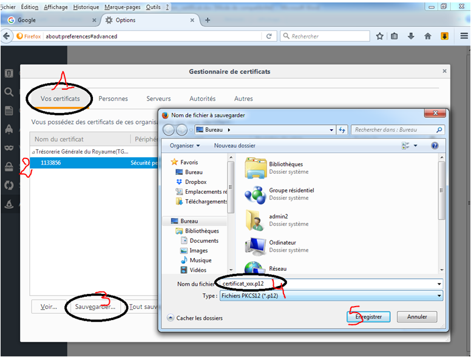
- اضغط على تبويب Vos certificats.
- اختر الشهادة الجديدة (الأحدث).
- اضغط على Sauvegarder…
- اختر مكان الحفظ، وأعطِ اسماً للملف، ثم اضغط على Enregistrer.
- أدخل كلمة مرور الحفظ مرتين (يمكن ترك الخانتين فارغتين)، ثم اضغط على OK.
- تظهر رسالة Sauvegarde des certificats et clés privées réussie (تم حفظ الشهادات والمفاتيح الخاصة بنجاح): اضغط على OK.

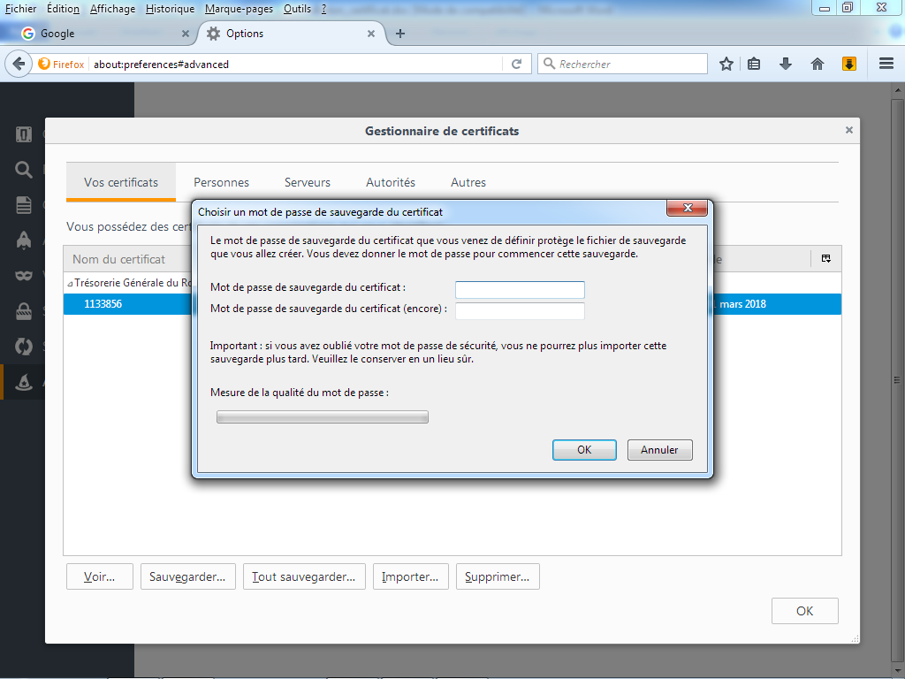

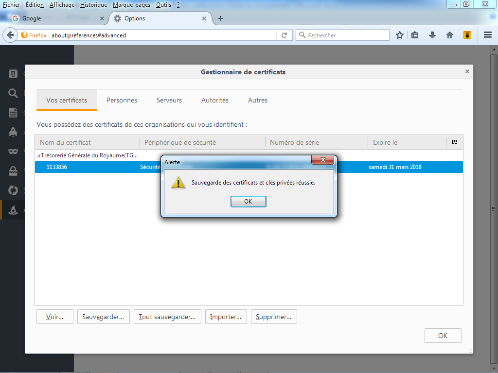
تذكّر
سجّل مكان الملف (.p12) وكلمة مرور الحفظ: ستُطلب منك في الخطوة الأخيرة.
الخطوة 6 — فتح لوحة Java والتحقق من الخيارات¶

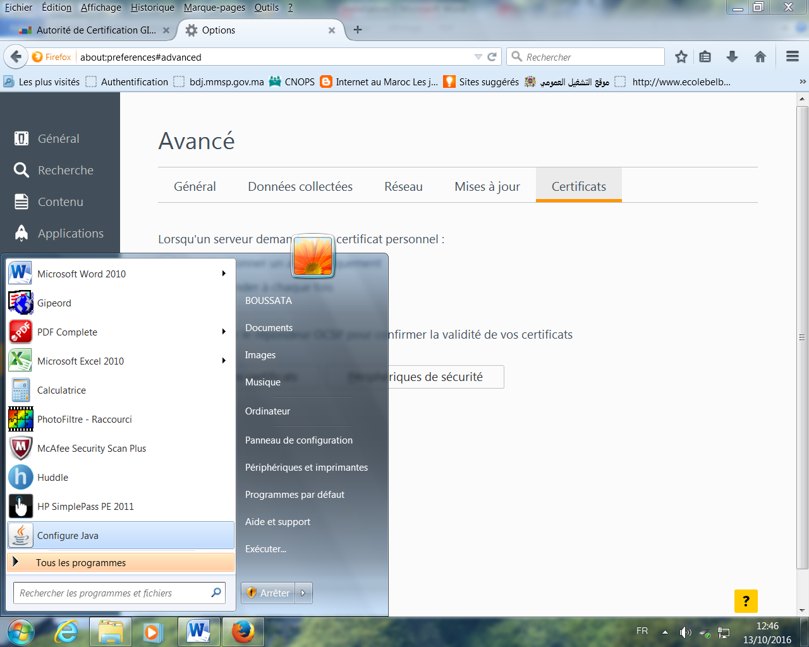
- اضغط على زر Démarrer في Windows.
- في خانة البحث، اكتب configurer java، ثم اضغط على Configure Java.
- اضغط على تبويب Avancé وتحقق من Paramètres de sécurité avancés حسب الجدول أسفله.
- اضغط على Appliquer. أبقِ لوحة Java مفتوحة.

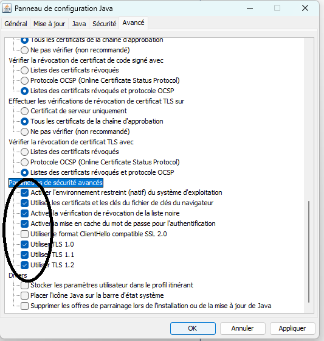
| الخيار | الحالة |
|---|---|
| Activer l'environnement restreint (natif) du système d'exploitation | ☑ مفعّل |
| Utiliser les certificats et les clés du fichier de clés du navigateur | ☑ مفعّل |
| Activer la vérification de révocation de la liste noire | ☑ مفعّل |
| Activer la mise en cache du mot de passe pour l'authentification | ☑ مفعّل |
| Utiliser le format ClientHello compatible SSL 2.0 | ☐ غير مفعّل |
| Utiliser TLS 1.0 | ☑ مفعّل |
| Utiliser TLS 1.1 | ☑ مفعّل |
| Utiliser TLS 1.2 | ☑ مفعّل |
الخطوة 7 — استبدال الشهادة القديمة في Java¶

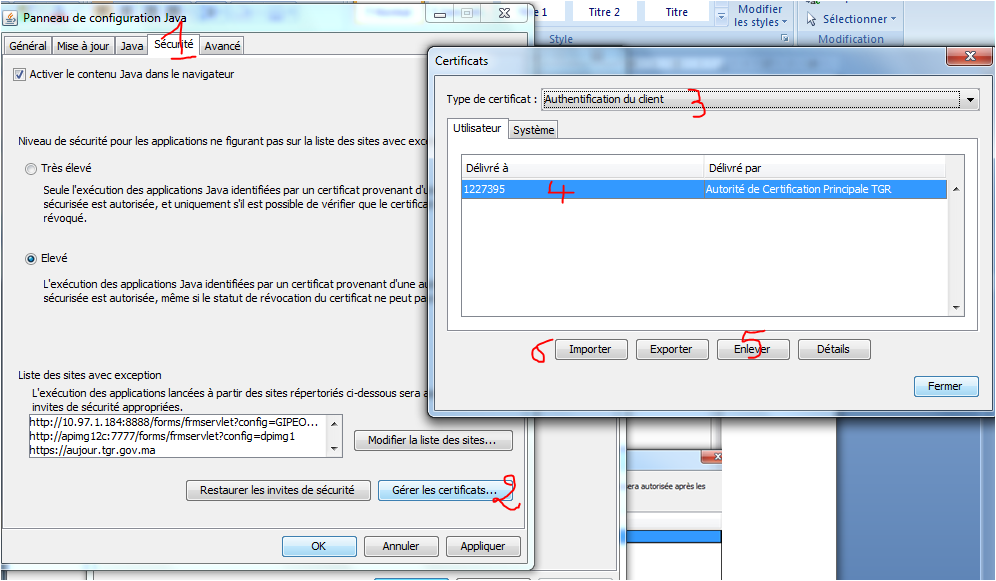
- اضغط على تبويب Sécurité.
- اضغط على Gérer les certificats…
- في Type de certificat، اختر Authentification du client.
- اختر الشهادة القديمة.
- اضغط على Enlever. إذا طُلبت كلمة مرور، اضغط على OK.
- اضغط على Importer، ثم اختر الشهادة الجديدة التي حفظتها من Firefox.
- أدخل كلمة مرور الحفظ الخاصة بالشهادة.
- عندما تُطلب كلمة المرور مرة ثانية، اضغط على OK دون كتابة أي شيء.
- اضغط على Fermer، ثم على OK.
تم تجديد الشهادة
أغلق المتصفح ثم أعد فتحه، وادخل من جديد إلى INDIM@J.